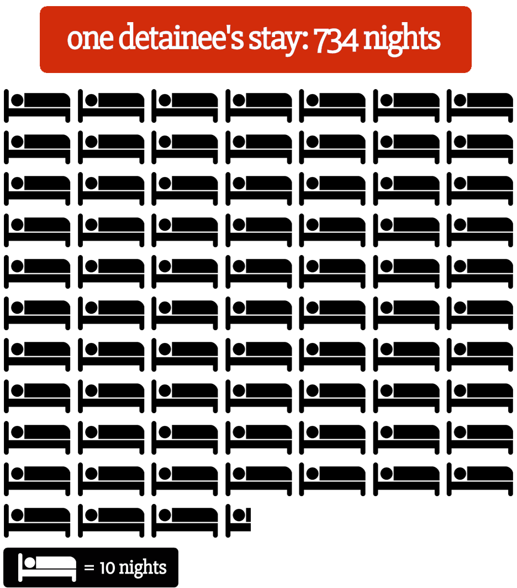

Behind the Walls
by Mariana Dale, Fernanda Echavarri, Robert Jaime, & AC SwedberghAbout 30,000 immigrants are held in immigration detention centers across the United States on any given night. These men and women of all ages are detained for months sometimes years while waiting to be deported or to be released and wait for immigration court hearings at home. Most detainees are undocumented. Some are legal permanent residents, many have called the United States home for decades.
The majority of immigrants detained in Arizona will pass through facilities run by the Corrections Corporation of America. The private prison company relies on federal contracts for 44 percent of its revenue. Revenues from Immigration and Customs Enforcement contracts have increased in recent years and in 2013, CCA made 13 percent of its revenue from detaining immigrants.
The Department of Homeland Security inspects private facilities to make sure their services meet federal standards including medical care, emergency plans and sexual abuse prevention. CCA facilities met standards in most areas, according to 2012 inspection reports, but needed to improve records of use of force incidences, food services and record keeping.
The High Cost of Detention Stays
TOTAL = $86,612
Vulnerable Populations
- Statement from ICE in response to Hernandez-Polanco's complaints
"We don't believe anyone should be detained, period," Shah said.
The Congress mandated quota for immigrants in detention is a "major problem that ignores the impact on individuals and their families."
Contracting out detention "creates an incentive for private prison corporations to lobby for the laws and policies that lead to increases in the number of immigrants being incarcerated. The private prison lobby has said explicitly that they view the federal detention market as the place to grow their business."
A statement from the Detention Watch Network website reads, "Revenues and stock prices are skyrocketing for private prison companies that build immigration prisons, like Corrections Corporation of America (CCA) and the GEO Group, Inc. These companies have an incentive to urge the government to build more jails, and in fact, regularly lobby in Washington, DC for more detention, even if it is not the most effective use of taxpayer dollars."
Immigration and Customs Enforcement lists 82 locations across the U.S. where it can house detainees. Four are in Arizona, only one is operated by the government.
ICE's Enforcement and Removal Operations (ERO) manages the "civil immigration detention system" and oversees cases of people who have been released from detention until the cases are formally closed.
"Through an aggressive inspections program, ICE ensures its facilities follow ICE's National Detention Standards. ERO's Detention Standards Compliance Unit ensures that detainees in ICE custody reside in safe, secure and humane environments and under appropriate conditions of confinement," according to ICE's website.
In response to allegations of abuse inside detention centers: "ICE has a strict zero tolerance policy for any kind of abusive or inappropriate behavior in its facilities and takes any allegations of such mistreatment very seriously."
Immigration Court Asylum Applications Received
Asylum Grant Rate FY 14
| Grants | Denials | Grant Rate | |
| Overall | 8,775 | 9,222 | 49% |
| Arizona courts | 63 | 296 | 21% |
Chinese immigrants account for more than 45 percent of successful asylum cases, less than six percent of asylum grants go to Central Americans and even less to Mexican immigrants.
One Arizona case is Nicol Hernandez-Polanco. She has filed for asylum because she feared for her life in her native Guatemala being transgender. She has been held at the Florence detention center since October. According to U.S.Citizenship and Immigration Services "affirmative asylum applicants are rarely detained by U.S. Immigration and Customs Enforcement."
Copyright ©2015 Arizona Public Media